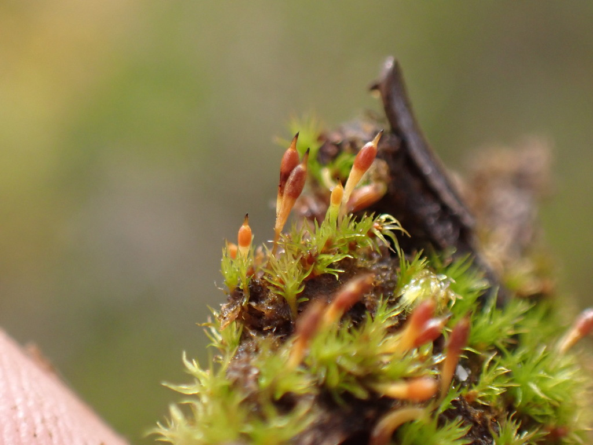

Bruchiaceae
(Bruch's Moss Family - informal)
Bruchiaceae is a family of small, often ephemeral mosses typically found on soil. They are characterized by lanceolate to subulate leaves with a strong costa, and distinctive capsules borne on setae, which often feature a prominent, elongated neck (apophysis) below the spore sac. The capsules frequently lack a functional peristome (cleistocarpous or gymnostomous).
Overview
The Bruchiaceae family encompasses small, often inconspicuous mosses that typically colonize bare, damp soil in fields, ditches, trail sides, and other open or disturbed habitats. Many species are ephemeral, completing their life cycle relatively quickly, particularly in spring or early summer following rains, and surviving unfavorable periods as spores.
The most striking feature of the family, particularly the main genus Bruchia, is the sporophyte. While the gametophytes are small, the capsules are often relatively large, elevated on a seta, and possess a distinct, often elongated neck (apophysis) below the urn (spore sac). This long neck is a key characteristic. Furthermore, many species lack a functional mechanism for capsule opening; they may be cleistocarpous (never opening) or gymnostomous (lacking peristome teeth to regulate spore release after the lid falls). The genus Trematodon, sometimes included here or placed in Dicranaceae, is very similar but typically possesses a peristome.
Bruchiaceae is widespread, particularly in temperate zones worldwide. Its taxonomic placement has varied, often linked with families like Dicranaceae, Ditrichaceae, or sometimes Pottiales, reflecting ongoing research into the relationships of these small, often structurally simplified mosses.
Quick Facts
- Scientific Name: Bruchiaceae
- Common Name: (Bruch's Moss Family - informal)
- Number of Genera: 1-3 (Primarily Bruchia; also Pringleella, Eobruchia)
- Number of Species: ~20-30 (in Bruchia)
- Distribution: Widespread, especially temperate regions; on soil.
- Evolutionary Group: Bryophytes - Bryopsida (True Mosses) - Order uncertain (Dicranales / Pottiales / Bryales)
Key Characteristics
Bruchiaceae mosses are characterized by small gametophytes and distinctive sporophytes.
Gametophyte Form and Habit
The gametophyte generation is typically small and terrestrial:
- Habit: Plants small, gregarious or forming loose tufts, often annual or short-lived perennials.
- Size: Stems short, usually less than 1 cm high, erect.
- Substrate: Typically found on bare, damp, often acidic or sandy soil.
- Protonema: Sometimes persistent but usually not extensive or conspicuous like in Disceliaceae or Ephemeraceae.
Leaves (Phyllids)
Leaves are typically narrow and costa is prominent:
- Arrangement & Shape: Usually erect-spreading, sometimes appressed when dry. Shape typically lanceolate or linear-lanceolate, often tapering to a narrow, subulate (awl-shaped) point from a broader, sometimes sheathing base.
- Costa (Midrib): Strong, single, usually filling the narrow upper part of the leaf (subula) and often shortly excurrent (extending beyond the tip).
- Margins: Usually entire or sometimes finely toothed (serrulate) near the apex.
- Cells: Upper laminal cells typically rectangular, rhomboidal, or linear, smooth. Basal cells often larger, more lax, and rectangular. Alar cells (at basal corners) usually not differentiated.
Reproductive Structures
- Sexual Condition: Variable, can be autoicous (male and female on same plant) or dioicous (separate male and female plants).
- Archegonia (female organs) are terminal on main stems, often surrounded by slightly larger, sheathing perichaetial leaves.
- Antheridia (male organs) are terminal in bud-like clusters (perigonia), either on separate plants or on branches below the archegonia.
Sporophyte
The sporophyte is highly distinctive and key to identification:
- Seta: Present, variable in length (short to relatively long), often elongating considerably as the capsule matures, typically straight or somewhat curved.
- Capsule: Erect or inclined, shape varies (subglobose, ovate, pyriform) but typically possesses a distinct, often greatly elongated and tapering neck (apophysis) below the urn (spore sac). The apophysis can be as long as or longer than the urn and is often wrinkled or stomatose (bearing pores).
- Operculum: Often differentiated (conical or beaked) but may remain attached if the capsule is cleistocarpous.
- Dehiscence & Peristome: Highly variable and characteristic. Capsules may be:
- Cleistocarpous: Remaining closed, spores released by decay of the capsule wall. Operculum not functional.
- Gymnostomous: Operculum falls off, but there is no peristome around the mouth.
- (Note: The closely related genus Trematodon typically has a peristome of 16 teeth).
- Calyptra: Typically small, mitrate (conical) or cucullate (hood-shaped), smooth, often falling early.
Spores
Spores are often relatively large, tetrahedral or spherical, and variously ornamented (e.g., papillose, spinose, reticulate), which can be important for species identification.
Chemical Characteristics
No specific chemical characteristics are widely noted beyond those typical for Bryopsida mosses.
Field Identification
Identifying Bruchiaceae usually involves finding the characteristic sporophytes on small moss plants growing on soil.
Primary Identification Features (Hand Lens Level)
- Capsule with Long Neck: The most critical feature. Look for capsules (often yellowish, orange, or brown when mature) elevated on setae, possessing a distinct and often conspicuously long, tapering neck (apophysis) below the main spore sac.
- Habitat: Found on bare, damp soil – fields, pastures, ditches, roadsides, lake margins, often acidic or sandy.
- Small Gametophyte: Note that the leafy plant bearing the sporophyte is typically very small.
- Lack of Peristome: If capsules are mature and open (gymnostomous), the mouth will lack teeth. If cleistocarpous, they simply won't open.
Secondary Identification Features
- Leaf Shape: Narrowly lanceolate or subulate leaves with a strong costa.
- Seasonality: Often found with mature capsules in spring or early summer.
- Seta Length: Seta is usually distinct and elevates the capsule well above the gametophyte.
Seasonal Identification Tips
- Spring / Early Summer: This is the prime time to find Bruchiaceae with mature or maturing sporophytes, making them most identifiable.
- Other times: Gametophytes may be present but are very small and easily overlooked or absent altogether (in annual species).
Common Confusion Points
Several other small, soil-dwelling mosses might cause confusion:
- Trematodon (Bruchiaceae or Dicranaceae): Extremely similar habit and long-necked capsules, but Trematodon typically has a distinct peristome of 16 teeth. Often considered the closest relative or sometimes included in the family.
- Ditrichaceae (Ditrichum, Pleuridium): Small mosses on soil. Ditrichum has peristomes and lacks the long capsule neck. Pleuridium is cleistocarpous but capsules are sessile or on very short setae and lack the prominent neck.
- Ephemeraceae (Ephemerum): Also ephemeral soil mosses, often cleistocarpous, but capsules are globose, sessile or nearly so, and lack a distinct neck. Often have conspicuous persistent protonema.
- Funariaceae (Physcomitrium, Entosthodon): Some are gymnostomous or cleistocarpous. Physcomitrium capsules are typically globose and sessile or on short setae, lacking a long neck. Entosthodon capsules are often pyriform on longer setae but lack the extremely long neck of Bruchia.
- Pottiaceae (some small genera): Differ in leaf cell characteristics (often papillose), peristome presence/structure, and capsule shape (usually lack the long neck).
Field Guide Quick Reference
Look For:
- Habitat: Bare, damp soil
- Small gametophytes
- Capsules on distinct setae
- Prominent long neck (apophysis) on capsule
- Cleistocarpous or gymnostomous (no peristome)
Key Distinctions:
- vs. Trematodon: Peristome (absent vs. present).
- vs. Ditrichaceae: Capsule neck (long vs. short/absent).
- vs. Ephemeraceae: Seta (present vs. absent/short), capsule neck.
- vs. Funariaceae: Capsule shape and neck.
Notable Examples
The family is dominated by the genus Bruchia.

Bruchia flexuosa
(Flexuose Bruch's Moss - informal)
A representative species found in eastern North America and Europe. It grows in small tufts on damp soil. Characterized by its lanceolate-subulate leaves and pyriform capsule with a distinct, relatively long neck, borne on a flexuose (curved) seta. Typically gymnostomous (lacks peristome teeth).
Phylogeny and Classification
Bruchiaceae is classified within the class Bryopsida. Its phylogenetic placement among moss orders has been historically uncertain, often linked to Dicranales or Pottiales based on certain morphological similarities (like leaf structure or peristome reduction).
Modern molecular phylogenetics generally places Bruchiaceae within a broad concept of the Dicranales order, often closely related to families like Dicranaceae, Ditrichaceae, and Rhabdoweisiaceae. The genus Trematodon, which shares the long-necked capsule but possesses a peristome, is often considered its closest relative and is sometimes included within Bruchiaceae or placed alongside it within Dicranaceae sensu lato. The cleistocarpy or gymnostomy in Bruchia is viewed as a derived condition involving the loss or reduction of the peristome within this lineage.
Position in Plant Phylogeny
- Kingdom: Plantae
- Clade: Embryophyta (Land Plants)
- Division: Bryophyta (Mosses)
- Class: Bryopsida
- Order: Dicranales (most likely) / Pottiales / Bryales
- Family: Bruchiaceae
Evolutionary Significance
Bruchiaceae offers insights into moss evolution:
- Sporophyte Specialization: The development of the long apophysis is a notable specialization, possibly related to optimizing spore dispersal or photosynthesis in the sporophyte.
- Peristome Loss/Reduction: Represents instances of secondary loss or simplification of the peristome, a common evolutionary trend in mosses, particularly among ephemeral or cleistocarpous groups.
- Life History Adaptation: Shows adaptation to ephemeral niches through rapid life cycles and potentially durable spores.
- Taxonomic Relationships: Helps clarify relationships within the complex Dicranales order, particularly regarding the evolution of peristome structures and cleistocarpy.